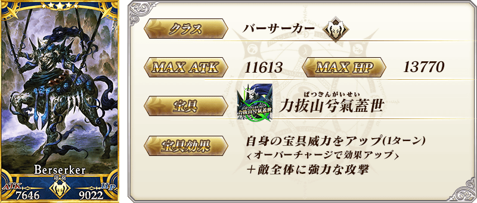
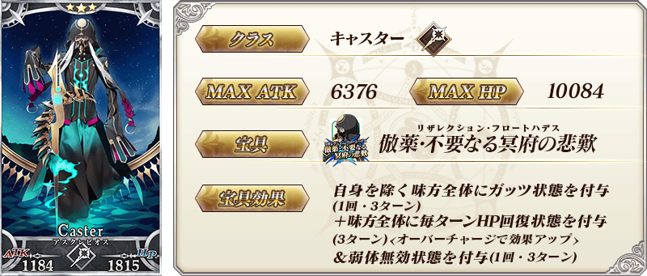
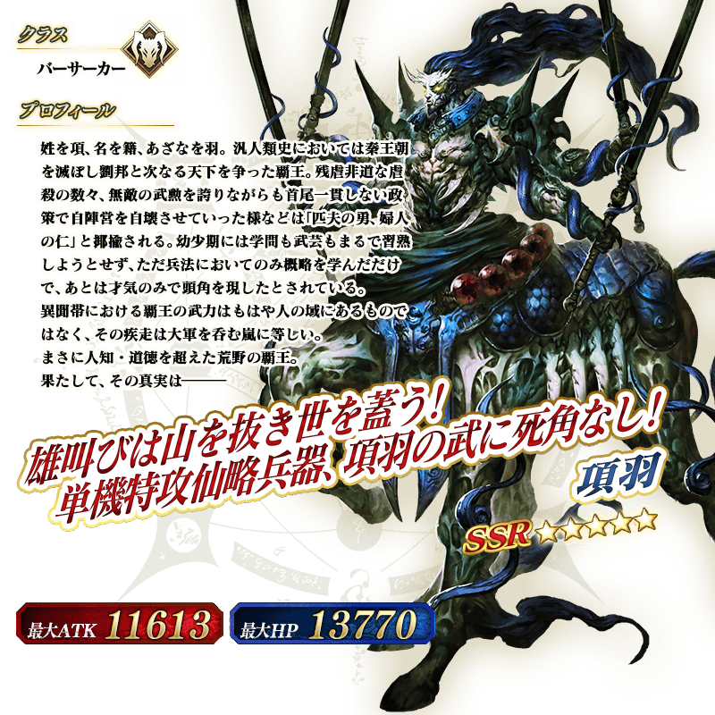
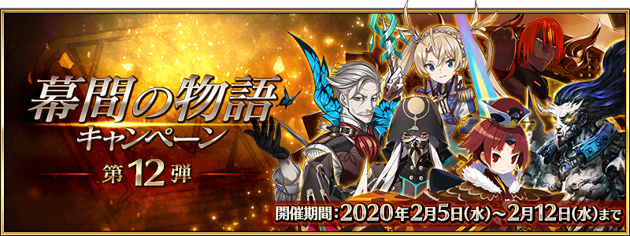

◆「幕間物語宣傳活動第12彈Pick Up召喚(每日交替)」期間◆
期間:2020年2月5日(三) 17:00～2月19日(三) 11:59
期間限定「幕間物語宣傳活動第12彈Pick Up召喚(每日交替)」舉辦！
本次從「幕間物語宣傳活動 第12彈」關聯者之中，「★5(SSR)布拉達曼特」「★5(SSR)項羽」以每日交替Pick Up！
「★3(R)阿斯克勒庇俄斯」常駐Pick Up！
Pick Up期間中，Pick Up對象從者的出現機率提升！
詳情請在聖晶石召喚畫面左下的召喚詳細確認。
11次召喚中確定1張★4(SR)以上和確定1位★3(R)以上的從者！ ※確定★4(SR)以上包含從者和概念禮裝。
◆有關從者的注意◆
※Pick Up期間中、「★3(R)阿斯克勒庇俄斯」就算通過各章前也能入手。
※「★5(SSR)布拉達曼特」「★5(SSR)項羽」「★3(R)阿斯克勒庇俄斯」在Pick Up期間結束後仍會在故事召喚被抽出。
◆「幕間物語宣傳活動第12彈Pick Up召喚(每日交替)」Pick Up內容◆
| Pick Up期間 | Pick Up內容 | |
|---|---|---|
| 每日交替Pick Up | 全天Pick Up | |
| 2/5(三) 17:00～ 2/6(四) 22:59 |
★5 布拉達曼特 ★5 項羽 |
★3 阿斯克勒庇俄斯 |
| 2/6(四) 23:00～ 2/8(六) 22:59 |
★5 布拉達曼特 | |
| 2/8(六) 23:00～ 2/10(一) 22:59 |
★5 項羽 | |
| 2/10(一) 23:00～ 2/13(四) 22:59 |
★5 布拉達曼特 ★5 項羽 |
|
| 2/13(四) 23:00～ 2/15(六) 22:59 |
★5 布拉達曼特 | |
| 2/15(六) 23:00～ 2/17(一) 22:59 |
★5 項羽 | |
| 2/17(一) 23:00～ 2/19(三) 11:59 |
★5 布拉達曼特 ★5 項羽 |
|
※請注意會以每日交替變更Pick Up的從者。

 ※上述「★5(SSR)布拉達曼特」的卡面為靈基再臨第2階段。
※上述「★5(SSR)布拉達曼特」的卡面為靈基再臨第2階段。
 ※上述「★5(SSR)項羽」的卡面為靈基再臨第2階段。

 ※上述「★5(SSR)布拉達曼特」的立繪為靈基再臨第2階段。
※上述「★5(SSR)布拉達曼特」的立繪為靈基再臨第2階段。
 ※上述「★5(SSR)項羽」的立繪為靈基再臨第2階段。
介紹「★5(SSR)布拉達曼特」「★5(SSR)項羽」的寶具演出！
在「Fate/Grand Order」官方網站內的公告中，以影片公開寶具演出，敬請確認。
其他還有，「幕間物語宣傳活動 第12彈」同時舉辦！
關於詳情，請自下述橫幅確認。
■「幕間物語宣傳活動 第12彈」詳細情報 